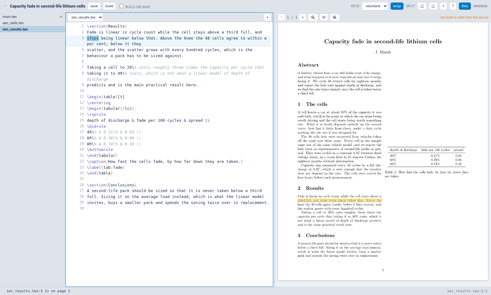
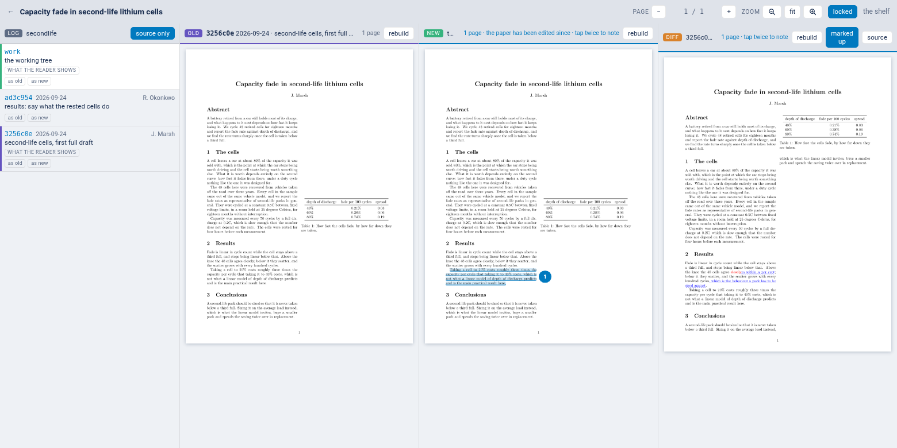

Writing it back
The source with the build beside it, and the paper beside its
own past.
The editor
Edit, in the reader's header or on a shelf card, opens the paper's
source on the left and the build on the right.

Double click a line and the place it made lights up on the page.
Double click the page and the line that made it takes the caret, in the
right file, which for an \input is not the one that was
compiled.
Both directions are the same SyncTeX map the reader uses to hang a note on a
sentence, read forwards as well as backwards.
The window breaks
C-x 3 puts a second window beside the first and
C-x 2 below it; each takes its own file, or another part of the
same one, and the divider drags. The buttons in the header do the same for a
keymap without chords.
Two keymaps
| standard | emacs |
|---|
| save | Ctrl-S | C-x C-s |
| build | Ctrl-Enter, F5 | C-c C-c |
| show this line in the build | F8 | C-c C-v |
| find, again | Ctrl-F, F3 | C-s |
| split beside, below | Alt-3, Alt-2 | C-x 3, C-x 2 |
| close, only, next window | Alt-0, Alt-1, F6 | C-x 0, C-x 1, C-x o |
| moving about | arrows, Home, End | C-a C-e C-f C-b C-n C-p, M-f M-b, M-<, M-> |
| kill, yank, region | the usual clipboard | C-k (a run collects), C-y, C-Space then C-w or M-w |
Arrow keys, shift-selection and the browser's own undo work in both. The
? button lists whichever map is on, and the choice is
remembered.
Four keys are the browser's. C-w,
C-n, C-t and C-q never reach a page:
C-w closes the tab. They are bound anyway for a browser that lets
them through, and the region can always be killed with C-Space
then C-k.
What it writes, and when
Nothing until you ask. There is no autosave, because a background write that
lands while a sentence is half rewritten is a change to a paper that nobody
made. build on save compiles after a save, for anyone who wants that
rhythm.
Saving writes the file in the paper's own working tree, with no copy and no lock,
so git status, git diff and every other habit go on
meaning what they meant. Two guards sit around it:
- A file that moved underneath is not overwritten. A pull, a sync
from elsewhere, or another window is allowed to win. The save is refused and
both answers are offered: keep yours and write it anyway, or take the file as
it is now, which puts what you had in the kill ring, so
C-y
brings it back into the new text.
- The previous contents are kept first, in
~/.cache/paperpen/<paper>/edits/, the last twenty saves of
each file. A short net for the ten minutes before a commit; git is the long
one.
It is an editor for writing sentences in a paper and nothing else: no
completion, no linting, no live collaboration. The merge tool is git, which is
already there.
The paper beside its own past
Versions opens four panes: the log, a build at a past commit, the
build as it is now, and latexdiff between the two.

One page number drives all three, and with locked on
they scroll together. source in the diff pane swaps the
marked-up PDF for git diff over the .tex, which is
what shows a macro or a figure path.
paperpen versions my-manuscript # the log, and which of it is built
paperpen versions my-manuscript --build 901c97a # that commit, compiled
paperpen versions my-manuscript --diff 901c97a # latexdiff against the working tree
paperpen versions my-manuscript --source 901c97a
paperpen versions my-manuscript --forget # throw the version builds away
Nothing is written into the paper's repository. A
version is taken with git archive, which only reads, and unpacked
into the cache, so this works on a repository that is dirty or mid-rebase, and
no worktree administration is left behind to prune.
A commit cannot change, so once built it is served from the cache forever. A
build with the working tree on one side can, so it is marked the paper has
been edited since rather than quietly redrawn, with a
rebuild button in the pane.
latexdiff does the markup and has to be installed. A manuscript that needs
its own flags sets the whole command:
PAPERPEN_LATEXDIFF="latexdiff --flatten --math-markup=whole" paperpen serve